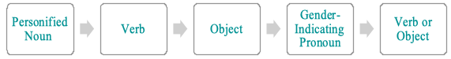

<?xml version="1.0" encoding="UTF-8"?>
<div data-template="templates:surround" data-template-at="content"
    data-template-with="templates/page.html" xmlns="http://www.w3.org/1999/xhtml">
    <div class="container">

        <div class="page-header">
            <h1>About</h1>
        </div>

        <section>
            <h2>Corpus of Texts Used</h2>

            <p>Included in my study are eighty-four poems written by Lord Byron between 1802 and
                1821, as well as ninety-four poems written by Coleridge between 1787 and 1833. For
                this experiment, my indexing, analysis, and discussion are limited to the digital
                copies of Byron and Coleridge’s poetic works, all of which are edited by Ernest
                Hartley Coleridge, and are available to me through <i>Project Gutenberg</i>. <i>Project
                Gutenberg</i> offers seven volumes of Lord Byron’s poetry, though I have only used the
                first volume (1898), the second volume ( 1899), the third volume (1900), the fourth
                volume (1901), and the seventh volume (1904), as well as two volumes of Coleridge’s
                poetic works, though I have only used the first volume (1912). I chose these digital
                copies because they are open-access resources, meaning that I do not have to ask for
                or purchase permission to reproduce these texts in my own index, as well as for
                their availability as Plain Text Files, which can be copied and pasted into my TEI
                document with less formatting adjustments required than other formats.</p>

            <p>The volumes that I have excluded from this study contain long dramatic poetic works,
                such as Byron’s <i>Don Juan</i>, and other non-poetic works. Dramatic works, although they
                could contain gendered personifications, the existence of multiple characters
                creates difficulty and confusion regarding matching the gendered pronoun or other
                gender indicators to the appropriate personification, whereas non-poetic works
                contain rare and infrequent instances of gendered personifications. Additionally,
                poems that do not contain at least one instance of gendered personifications are
                excluded from my corpus, as well as poems that are translations because I want to
                highlight Byron and Coleridge’s own gendering systems.</p>

            <h2>Indexing Methodology</h2>

            <p>My indexing process involves reading through each poem in the aforementioned selected
                volumes to locate and manually note personifications that have a pronoun or other
                indicator that determines their gender; any poem that does not have any instances of
                gendered personifications is excluded from my index and study. While reading through
                the poems, I manually highlighted the personified noun and its gender indicator.
                Throughout this process, I found that most gendered personifications were fairly
                easy to identify, as many of them followed a common syntactic structure:</p>

            <figure>
                
                <figcaption>Figure 1: “Most Common Gendering Syntactic Structure” </figcaption>
            </figure>


            <p>Consider this example from Coleridge’s “Qua Nocent Docent” where the speaker says,
                “No more, as then, should sloth around me throw/ her soul-enslaving, leaden chain!”
                (lines 2-3). As we can see clearly, grammatically, the pronoun “her” belongs to
                “sloth,” which grants it a feminine identity. In this example, because this instance
                of gendering appears within the first three lines of the poem, and no other nouns
                are personified within these first few lines, I can record this as an instance of
                gendered personifications with complete confidence. However, take this example from
                Byron’s “On the Death of a Young Lady, Cousin to the Author, and Very Dear to Him,”
                where the readers are introduced to Margaret (line 3), the poet’s cousin, who has
                died, in the first stanza of the poem. In the second stanza, however, Byron writes,
                “The King of Terrors seized her as his prey” (line 7). While this instance of
                gendered personifications follows a similar grammatical pattern as the first
                example, the personification of “death” is indirectly implied through the title “The
                King of Terrors.” From the context of the poem, I can tell that “her” is referring
                to Margaret, who has fallen “prey” to something, which the title and the first
                stanza indicate is “death”; therefore, I record this as an instance of a masculine
                personification as indicated by the word “King,” though in this instance, having a
                thorough knowledge of the context of the poem is necessary to make such a decision.
                As a result, I elected to not use the “search” or “find” functions, as a significant
                amount of reading is needed to understand the context of the poem in order to make
                an accurate decision regarding a potential instance of gendered personifications.
                Also, the “search” or “find” functions are not always effective in locating gendered
                personifications, as Byron and Coleridge assign gender in creative ways, such as
                through the use of words like “dictatress” (“English Bards and Scotch Reviewers
                line” 1003), that I might not have been able to anticipate, and therefore, would not
                know to look for these creative gender indicators.</p>

            <p>Then, after I have manually compiled all the instances of gendered personifications
                in the works of the two poets, I copied the text of each poem from the Plain Text
                Files of the volumes from <i>Project Gutenberg</i> and pasted them into a T.E.I (Text
                Encoding Initiative) document using the program Oxygen XML Editor. At this stage, a
                significant amount of reformatting is needed to prepare the text for tagging, as I
                had to make a number of formatting changes, such as removing any underscores, as
                well as any letters, symbols, or numbers within the lines of the poems that were
                placed by <i>Gutenberg</i> editors as footnotes. To delete the underscores, I simply used
                the find and replace functions in Oxygen to locate the underscores and replace them
                with “nothing” by simply leaving the “replace” box empty. However, to remove any
                numbers and letters that are placed in square brackets all at once, I had to insert
                regular expressions into the search and find functions; these expressions were
                created by a programmer at Simon Fraser University’s <a href="https://dhil.lib.sfu.ca">DHIL</a>. The following table
                summarizes the regular expressions that I used:</p>

            <figure>
                <table border="1">
                    <thead>
                        <tr>
                            <th>Function</th>
                            <th>"Find" Field</th>
                            <th>Replace</th>
                        </tr>
                    </thead>
                    <tbody>
                        <tr>
                            <td>To delete any numbers placed within squared brackets placed anywhere
                                between the beginning and the end of a line.</td>
                            <td>\s*\[\d+\]\s*</td>
                            <td>*nothing*</td>
                        </tr>
                        <tr>
                            <td>To delete any Roman numerals placed within squared brackets placed
                                anywhere between the start and end of a line.</td>
                            <td>\s*\[[ivxclm]+\]\s*</td>
                            <td>*nothing*</td>
                        </tr>
                        <tr>
                            <td>To delete any letters of the alphabet placed within squared brackets
                                placed anywhere between the start and end of a line.</td>
                            <td>\s*\[[abcdefghijklmnopqrstuvwxyz]+\]\s*</td>
                            <td>*nothing*</td>
                        </tr>
                    </tbody>
                </table>
                <figcaption>Figure 2: “Regular Expressions”</figcaption>
            </figure>

            <p>Without the ability to remove these underscores and footnote indicators, the process
                of preparing the text for tagging would have to be done manually, which is
                incredibly time consuming and creates room for errors. In addition to the regular
                expressions in the table, I also used the expression, ^\s*(.*?)\s*\d*s*$ in the
                “find” field, and &lt;l>$1&lt;/l> in the “replace” field, to code each individual line of
                a poem as a “line.” Consider this example of Coleridge’s “Qua Nocent Docent” as it
                appears in the XML Editor file:</p>

            <pre><code>&lt;div type="poem" xml:id="c3">
    &lt;head>
        &lt;title>Qua Nocent Docent&lt;/title>
    &lt;/head>
    &lt;epigraph>
        &lt;quote>O! mihi praeteritos referat si Jupiter annos!&lt;/quote>
    &lt;/epigraph>
    &lt;lg>
        &lt;l n="1">Oh! might my ill-past hours return again!&lt;/l>
        &lt;l n="2">No more, as then, should <span class="seg">&lt;seg ana="#sloth"></span>sloth<span class="seg">&lt;/seg></span>
                    around me throw&lt;/l>
        &lt;l n="3"><span class="ref">&lt;ref ana="#f" corresp="#sloth"></span>Her<span class="ref">&lt;/ref></span> soul-enslaving,
                    leaden chain!&lt;/l>
        &lt;l n="4">No more the precious time would I employ&lt;/l>
        &lt;l n="5">In giddy revels, or in thoughtless joy,&lt;/l>
        &lt;l n="6">A present joy producing future woe.&lt;/l>
    &lt;/lg>
    &lt;lg>
        &lt;l n="7">But o'er the midnight Lamp I'd love to pore,&lt;/l>
        &lt;l n="8">I'd seek with care fair <span class="seg">&lt;seg ana="#learning"></span>Learning<span class="seg">&lt;/seg></span>'s
                    depths to sound,&lt;/l>
        &lt;l n="9">And gather scientific Lore:&lt;/l>
        &lt;l n="10">Or to mature the embryo thoughts inclin'd,&lt;/l>
        &lt;l n="11">That half-conceiv'd lay struggling in my mind,&lt;/l>
        &lt;l n="12">The cloisters' solitary gloom I'd round.&lt;/l>
    &lt;/lg>
    &lt;lg>
        &lt;l n="13">'Tis vain to wish, for <span class="seg">&lt;seg ana="#time"></span>Time<span class="seg">&lt;/seg></span> has
                    ta'en <span class="ref">&lt;ref ana="#m" corresp="#time"></span>his<span class="ref">&lt;/ref></span> flight--&lt;/l>
        &lt;l n="14">For follies past be ceas'd the fruitless tears:&lt;/l>
        &lt;l n="15">Let follies past to future care incite.&lt;/l>
        &lt;l n="16">Averse maturer judgements to obey&lt;/l>
        &lt;l n="17"><span class="seg">&lt;seg ana="#youth"></span>Youth<span class="seg">&lt;/seg></span> owns, with pleasure owns,
                    the Passions' sway,&lt;/l>
        &lt;l n="18">But sage <span class="seg">&lt;seg ana="#experience"></span>Experience<span class="seg">&lt;/seg></span> only
                    comes with years.&lt;/l>
    &lt;/lg>
&lt;/div></code></pre>

            <p>Here, the entire poem is encompassed with an open &lt;div> and close &lt;/div>
                division tag that encodes this text as a single poem, as well as is assigned an id
                number – “c” refers to Coleridge, and “b” to Byron. Also, the title of the poem is
                surrounded by a beginning &lt;head> and end &lt;/head> header tag, as well as an
                open &lt;title> and close &lt;/title> title tag. Similarly, the epigraph is
                surrounded by an open &lt;quote> and close &lt;/quote> tag and an open &lt;epigraph>
                and close &lt;/epigraph>. epigraph tag. Next, each stanza is placed within a line
                group tag &lt;lg> and &lt;/lg>, and each line is placed within a line tag &lt;l> and
                &lt;/l>, as well as is given a line number (n=“#”). Because adding each individual
                line tag would be an exhaustive process, the aforementioned regular expression can
                automatically insert these tags all at once. Coding each segment of the text in this
                manner allows the oxygen program as well as the website platform that now hosts my
                index to understand each part of the text, which makes any necessary formatting or
                manipulating actions easier to carry out.</p>
            <p>After the text has been prepared for tagging by removing the remnants of previous
                formatting and coding each segment of the text, I then tagged the gendered
                personifications.</p>
            <p>In this example, we have five personified terms, “sloth,” “Learning,” “Youth,”
                “Experience,” and “Time,” though only “sloth” and “Time” are gendered. From these
                two examples, we can see how personification can be indicated through
                capitalization, as is the case for all of the personifications other than
                “sloth”–though not all personifications are capitalized, nor do all capitalizations
                denote personification, the capacity to possess physical features that are
                particular to living beings (i.e. wings), and the agency to feel emotions or preform
                actions (e.g. “tell”). All personifications are encoded as segments (“seg”) to
                indicate that they are personified. Terms that refer to a statue of a person, vague
                terms in terms of gender like the “spirit” and “muse,” and terms that are given
                qualities that are not necessarily exclusive to living beings, are not tagged as
                personifications. Finally, because “sloth” and “Time” are the terms that are
                gendered, they have been connected to the referents (“ref”) “her,” which is itself
                categorized as “#f” to denote feminization, and “his,” which is tagged as “m” to
                indicate masculinity. Nouns that are personified but not gendered are not assigned a
                referent. After indexing all of the poems fit the criteria outline above, I
                extracted my data and preformed various analyses using the Tableau Desktop
                program.</p>

        </section>

    </div>
</div>
